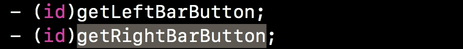
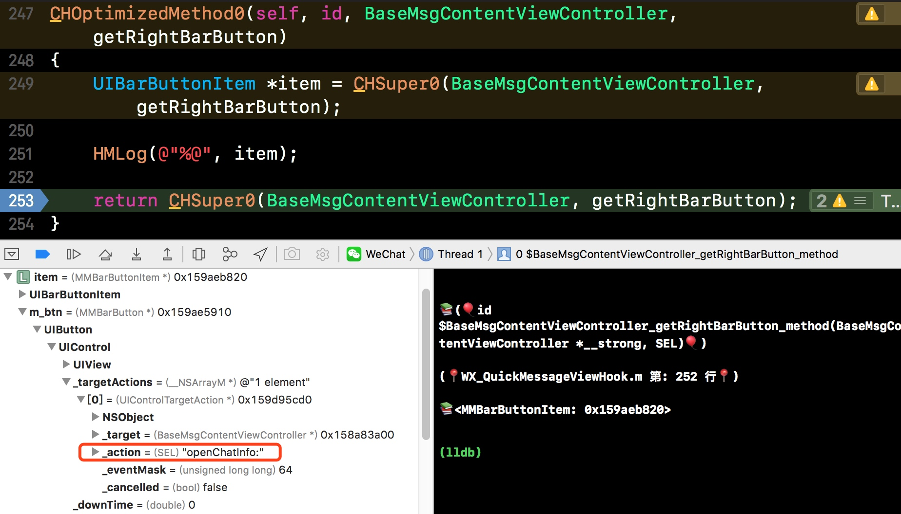
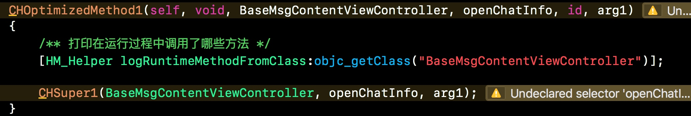
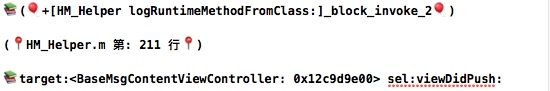
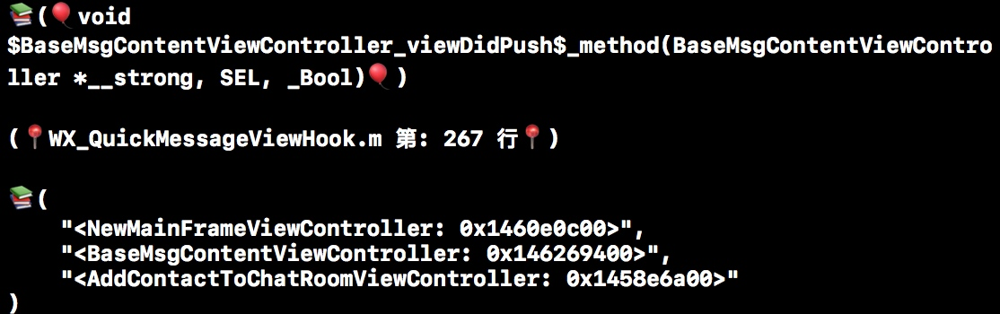
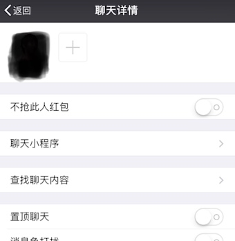

Markdown 语法和 MWeb 写作使用说明
Markdown 的设计哲学
本文约定
标题
第一级标题
记一次原始方法找到目标控制器的方法
记一次原始方法找到Hook目标控制器的方法
环境-目标
1.环境：抢红包屏蔽个人功能实现
2.目标：找到微信单聊个人信息控制器，添加”不抢此人红包”开关
想法-步骤
1.在Class-dump头文件BaseMsgContentViewController中寻找到聊天页右上角个人详情按钮
2.按钮-点击事件方法-打印方法运行中调用了哪些方法-根据新方法找到push相关方法-在push方法中打印navigationController.viewcontrollers-找到push目标控制器
1、在BaseMsgContentViewController头文件中搜索‘button’关键词，找到-getRightBarButton方法

2、Hook -getRightBarButton
我们可以发现此方法返回的是UIBarButtonItem，我们创建一个UIBarButtonItem赋值为此处返回的item，通过断点可以找到对应的target点击方法-openChatInfo

3、Hook -openChatInfo 查看运行过程中调用了哪些方法
通过查看调用方法列表找到相关页面逻辑方 sel:viewDidPush:

4、Hook sel:viewDidPush:在里面打印Push控制器的层级数组
由此可以看到页面跳转的层级，从而找到按钮跳转的目标控制器，添加控制开关~最后实现效果,之后会考虑把最近做的微信小助手上线越狱商店

总结
记一次学习逆向原始获取目标的方法，作为逆向开发工程师，熟练运用IDA、Hopper等反汇编工具才是王道！共勉，加油!
- Copyright © 2017 FantasticSkyBaby. All Rights Reserved